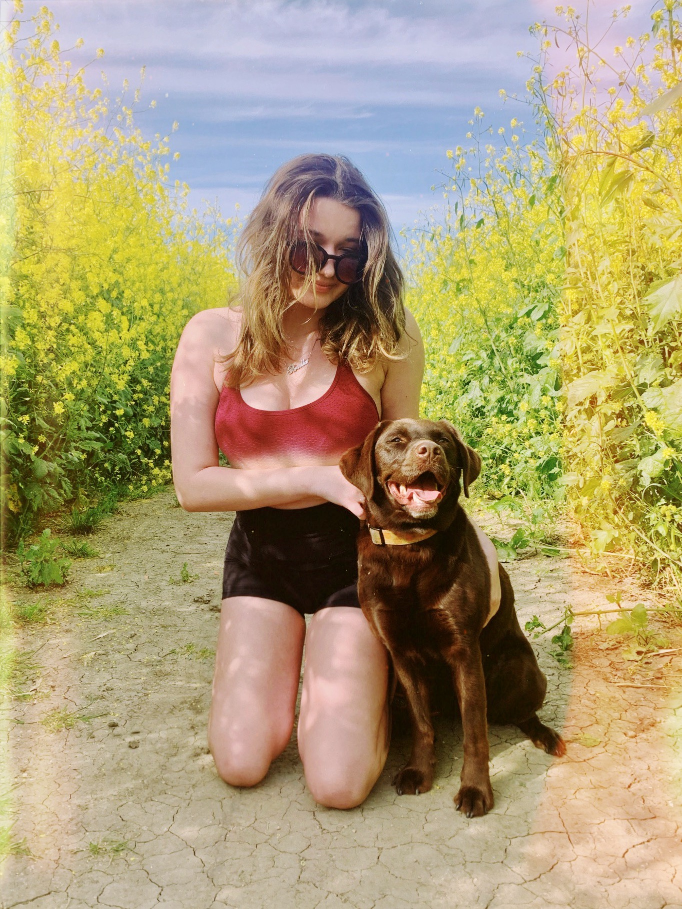

<!DOCTYPE html>
<html>
<head>
    <title>Lab 9: Styling Block Elements</title>
    <link rel="stylesheet" type="text/css" href="css/lab.css"
</head>
</html>

    <div id="content">
<br>
  <h1>LAB NINE: STYLING BLOCK ELEMENTS</h1>
    <div id="image">
    </div>
<br>
<br>
    <div id="purpose">
	<h1>PURPOSE</h1>
	     <p>The purpose of this lab was to continue building on our css styling from
       previous labs. By becoming familiar with the differences in margins,
       padding, width, and height for each div id element we can then add this to
       our css stylesheet, which will now be implemented in every lab.</p>
    </div>
<br>
<br>
    <div id="challenges">
  <h1>CHALLENGES</h1>
			 <p>The only challenge I originally encountered was centering my boxes because
         when I changed their width it automatically went to the left. I messed
         around with different aligning codes but none worked, then I looked back
         at my "img" css and saw margin-left and margin-right , which ended up being
         the correct coding.</p>
     </div>
<br>
<br>
    <div id="results">
	<h1>RESULTS</h1>
	<h3>We are looking at my results!</h3>
			 <p>I was successfuly able to fix my boxes width and height as well as center them.
          I believe this is the format I want for my stylesheet so will be adding it to every
          past lab now as I am content with the appearence in colors, font, and borders. I
          also put a background color behind my image, but made it look more like a broken border.</p>
    </div>
<br>
<br>

<a href="../index.html">Back to my Homepage</a>
<br>
<br>
<br>
